Lecture 4
Stacks
- Stores arbitary objects
- linkedlist, list
- Insertion and deletions are LIFO
- Like a spring loaded plate dispenser
- Insertions at the top of the stack
- Removals from the top of the stack
Stack ADT (operations)
push(T)pop()T top()integer size()boolean isEmpty()
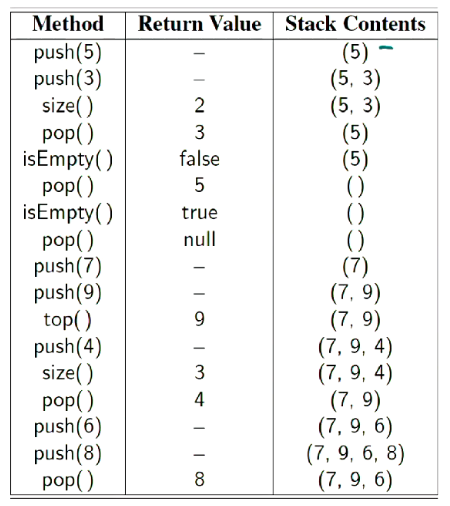
Array-base stack
- Simple stack implementation
- Add elements from left to right
- Variable keeps track of index of top element
- index is the top of the stack
Algorithm size()
return t + 1
Algorithm pop()
if isEmpty() then
throw NoSuchElementException
else
t <- t - 1
return S[t+1]
- If I am using an array, use
tto denote the index I'm up to- if I pop from the array, I set the last index to
Noneand reduce the indext
- if I pop from the array, I set the last index to
- Stack should not be allowed to change anything that isn't the top element
- Fixed-array can become full
- Push operations throws
IllegalStateException- Limitation of array implementation
- not intrinsic to the Stack ADT - only because we used an array as part of our ADT
- Push operations throws
Performance
- If we use a dynamic array, do we use a constant time for push
- Space is
- Each operations runs in
- push to the back is - we know where the back is, look it up and put the element there
- Pop is also
- Typically the size (the number of elements on the stack) is maintained inside the structure
Other implementations
-
We could use an extensible list
- Amortised push
- pop
-
Could also use some sort of linked list
- push and pop
- insert to the front in constant time
- push and pop
Queues
- Stores arbitary objects
- Insertions and deletions are FILO
- Think of a waiting line (queue)
- insertions at the rear of the queue
- Removals at the beginning of the queue
Queue operations
enqueue(T)T dequeue()T first()integer size()boolean isEmpty()
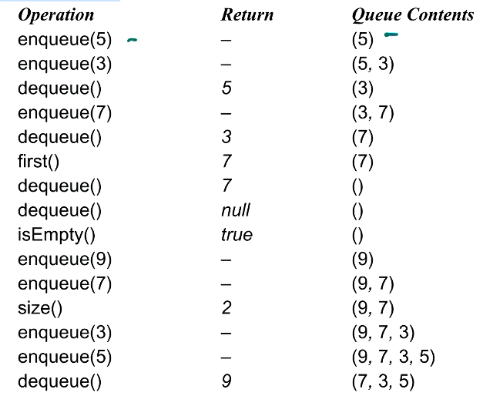
Array-Base queue
- Use an array of size in a circular fashion
- Two variables keep track of the front and size
- index of the front element
- number of stored elements (size)

Operations
- Enqueue throws an exception if an array is full
- implementation dependent (of having a full sized list)
- Uses modulo operator
The following are enqueue and dequeue operations
Algorithm enqueue(item)
if size() = N then
throw IllegalStateException
else
r <- (f + sz) mod N
Q[r] <- item
sz <- (sz + 1)
Algorithm deqeue()
if isEmpty() then
return null
else
item <- Q[r]
f <- (f + 1) mod N
sz <- (sz - 1)
return item
Programming: Call stacks
Programming languages use stacks to keep track of the current execution
- As methods are called, they are pushed to the call stack including information about the memory address of the instruction being executed (or the method being called) and the local variables required.
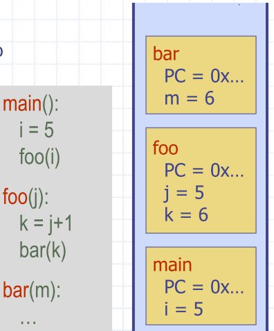
def reverse(inlist):
stack = []
for item in inlist:
stack.append(item)
i = 0
while len(stack) > 0:
inlist[i] = stack.pop()
i += 1
return inlist
reverse([1,2,3,4,5,6])
[6, 5, 4, 3, 2, 1]
- Also parentheses matching
- HTML Tag Matching
Application of Queues: Round Robin Scheduler
- Can be implemented using a queue Q repeately performing the following steps:
- e = Q.dequeue()
- Sevice element e
- Q.enqueue(e)
Iterators
- Structure, and ADT
- Facilitate scanning through a sequence of elements
Iterable interface
- Iterable has to following method
iterator
- A python list is iterable
- produces an iterator for its collection as the return value of the
iterator()method
- produces an iterator for its collection as the return value of the
mylist = [“a”, “b”, “c”, “d”, “e”]
for element in mylist:
print(element)
a
b
…
x = iter(mylist) # <list_iterator object at 0x000…>
print(x)
<list_iterator object at 0x000…>
m = next(x)
print (m)
a
m = next(x)
print(m)
b
Implementing iterators
- Implement two methods in your class
__iter__returns the iterator object__next__returns the next value and is called implicitly after each increment (in a “for element in thing” loop for example)
Class Counter:
def __init__(self, low, high):
self.current = low - 1
self.high = high
def __iter__(self):
return self
def __next__(self):
self.current += 1
if self.current < self.high:
return self.current
raise StopIteration
for c in Counter(3, 9):
print(c)
Tree basics
- Abstract model of hierarchical structure
- Consists of nodes with a parent-child relation
- parent is a node above other nodes of a tree
- Graphs have no heirarchy or structure
Arthemtic Expression tree
- Leaf nodes are operands (numbers)
- parents are operators
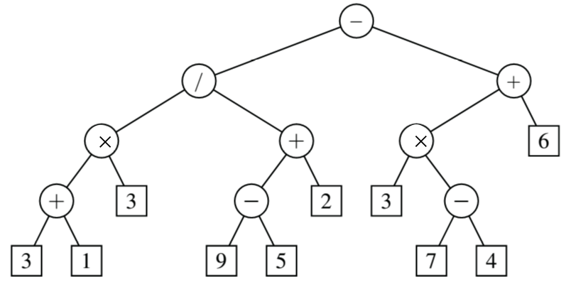
Tree terminology
| Terminoplogy | Meaning |
|---|---|
| Root | has no parents |
| Internal Node | child |
| External node | a.k.a. leaf |
| Edge | line |
| Ancestors of a node | anything connected and 'above' |
| Descendants of a node | anything connected and 'below' |
| Siblings | share parent |
| Degree | number of outlinks, i.e. links going outwards |
| level | root is at level 0 |
| Depth of a node/tree | Count of edges from node to the root, Depth of |
| Height of a node/tree | Number of edges of the longest path to a leaf |
| Subtree | A tree that you root at some arbitrary node |
| -ary tree | At most children for a given node |
| 2-ary Tree | at most 3 children for a given node |
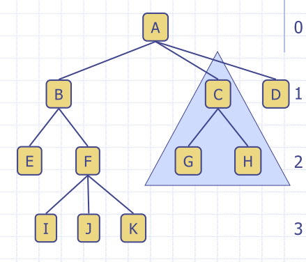
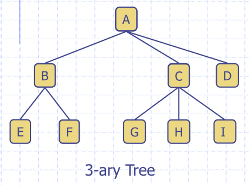
Tree properties
- If every internal node has at least 2 child nodes
- If is a number of leaf nodes
- Number of internal nodes is at most
General Tree Structure
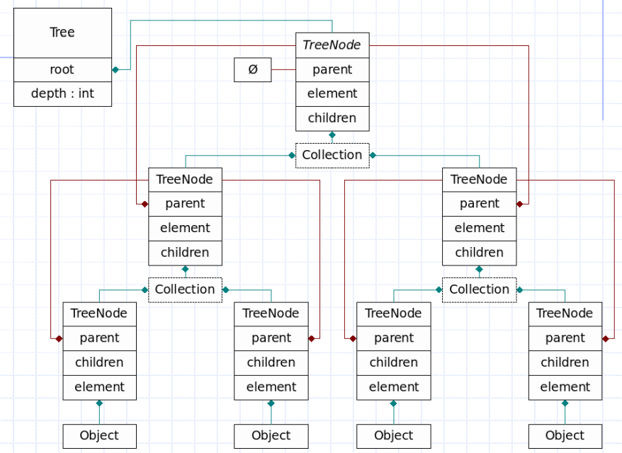
- Stores a pointer to it's parent
- Has a collection (container of 'stuff', list)
Tree ADT
size()isEmpty()iterator()positions()
Accessor methods:
root()parent(p)children(p)numChildren(p)
Query methods
isInternal(p)isExternal(p)isRoot(p)
Tree CDT
C is 'concrete'. Common update methods
replace(p,o)addRoot(o)remove(p)
Preorder Traversal
- A node is visited before its descendants
- Visit performs some task at the node
- Application: print a strcutured document
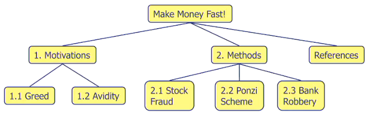
Algorithm preOrder(p)
visit(p)
for each child c of p
preorder(c)
Postorder traversal
- A node is visited after its descendants
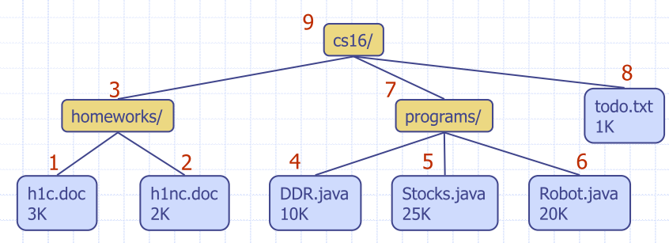
Algorithm postOrder(p)
for each child c of p
postOrder(c)
visit(p)
Binary Trees
- Each internal node has at most two children
- Exactly two for a properr binary tree
- Internal node has a left child and right child
- Full level
- level is full if it contains nodes
- Complete binary tree
- for height
- Level are full
- In level , all leaf nodes are as far left as possible
Binary tree ADT
Additional methods:
| name | description |
|---|---|
left(p) |
|
right(p) |
|
sibling(p) |
Do I have a sibling, if so, give me a reference to it |
Traversal
- A node is visited after its left subtree and before its right subtree
- There is no generic inOrder traversal methods for a k-ary tree
Print arithmetic expressions
- Print operand or operator when visiting node
- Print '(' before traversing left subtree
- print ')' after traversing right subtree
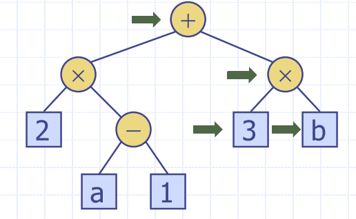
Euler Tour Traversal
- Handle preorder, postorder and inorder traversals
- Each node (in a binary tree) is visited three times
- blend different trvaersals to achieve more complex functionality
Linked Structure for Binary Trees
- Node stores
- element
- parent node
- left child node
- right child node
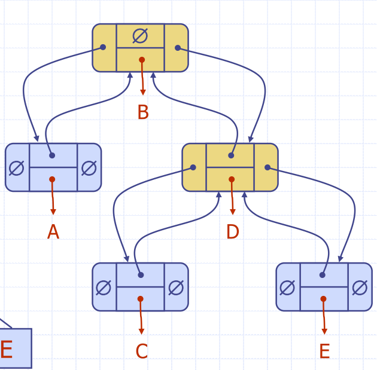
Breadth-first travsersal
- Visit all the nodes at depth before visiting nodes at depth
- Visiting level by level
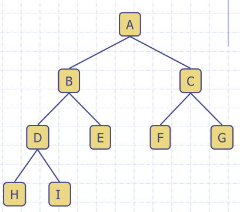
Examples
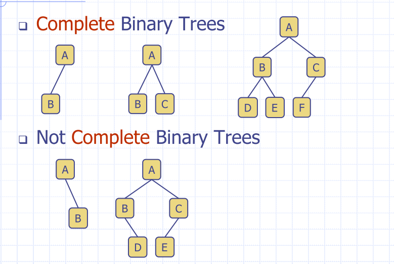
Proper binary tree
- Every node, except for the leaves has two children
- Also called a full binary tree
Examples
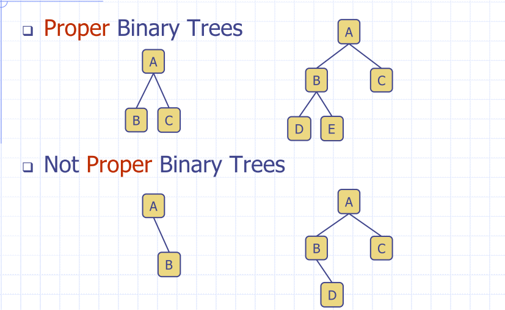